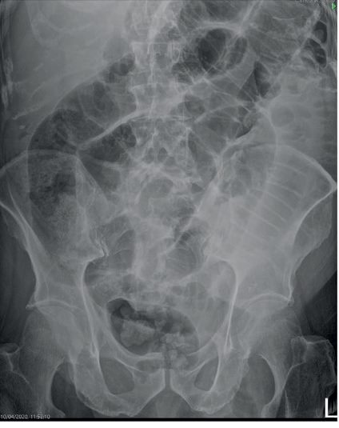
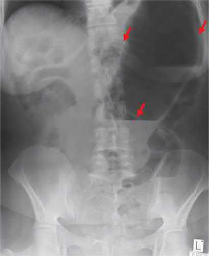
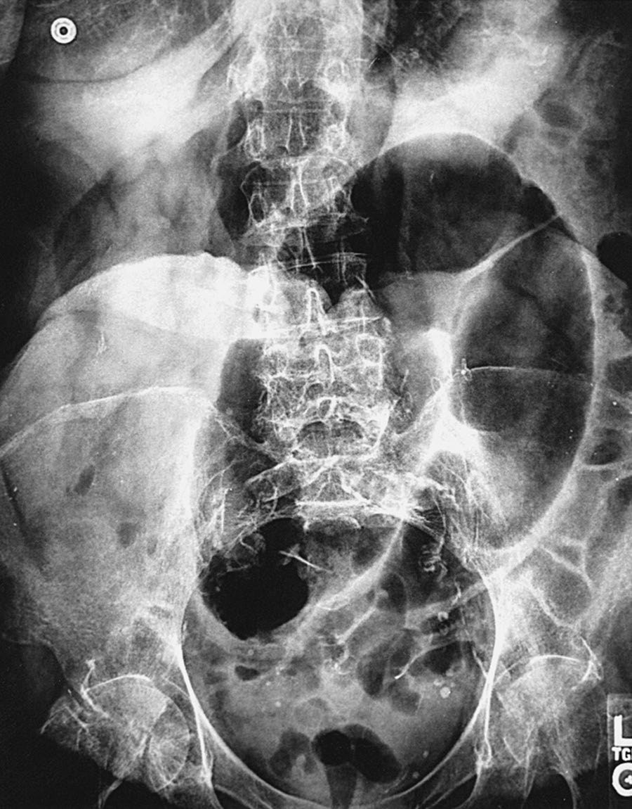
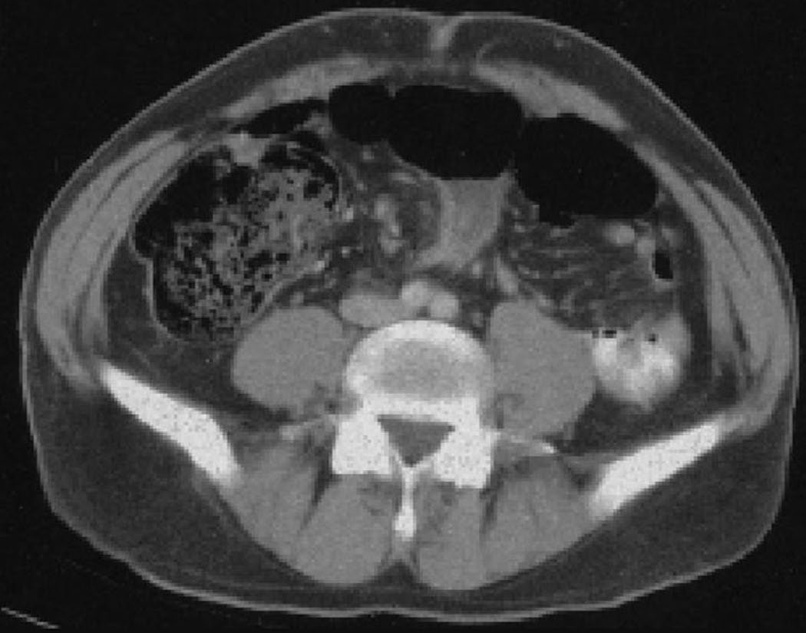

Bowel Obstruction
Summary
- Intestinal obstruction is impairment of the normal passage of bowel contents, classified as dynamic (mechanical, peristalsis working against an obstruction) or adynamic (paralytic ileus or pseudo-obstruction, with absent or inadequate peristalsis) [1].
- Adhesions are the commonest cause of small bowel obstruction in Western countries, while colorectal carcinoma is the leading cause of large bowel obstruction [1][2].
- The critical clinical distinction is between simple obstruction, which can usually be managed initially with fluid resuscitation and nasogastric decompression, and strangulating obstruction, a surgical emergency requiring urgent operation to prevent bowel infarction [1].
Definition
Intestinal obstruction may be dynamic, in which peristalsis works against a mechanical obstruction (acute or chronic), or adynamic, in which there is no mechanical obstruction but peristalsis is absent or inadequate, as in paralytic ileus or pseudo-obstruction [1]. Strangulation denotes obstruction with compromised blood supply to the bowel wall, causing ischaemia [1].
Pathophysiology
- Irrespective of cause, bowel proximal to a mechanical obstruction dilates while distal bowel empties and collapses; proximal peristalsis initially increases to overcome the obstruction, but ultimately becomes flaccid and paralysed if the obstruction persists [1].
- Proximal distension is caused by gas (bacterial overgrowth producing nitrogen and hydrogen sulphide after oxygen/CO2 reabsorption) and fluid (accumulated digestive secretions, up to ~3.5 L/day from saliva, bile, pancreatic and gastric secretions, as absorption is retarded), leading to dehydration and electrolyte loss from reduced intake, defective absorption, vomiting, luminal sequestration and peritoneal transudation [1].
- Adhesions (40%), hernia (12%), inflammatory strictures (15%), carcinoma (15%), faecal impaction (8%) and miscellaneous causes (5%) account for the relative frequency of intestinal obstruction [1].
Strangulation may result from direct pressure on the bowel wall (hernial orifices, adhesive bands), interrupted mesenteric blood flow (volvulus, intussusception), or increased intraluminal pressure in a closed-loop obstruction (obstructed at both proximal and distal points, e.g. a malignant colonic stricture with a competent ileocaecal valve), venous return is compromised before arterial supply, raising capillary pressure and ultimately causing haemorrhagic infarction, bacterial translocation and systemic sepsis [1][3].
Clinical features
- Cardinal features are colicky abdominal pain, distension, vomiting and absolute constipation (no flatus), though the pattern varies with the level and cause of obstruction [2].
- In small bowel obstruction, vomiting occurs earlier and distension is less than in large bowel obstruction; in large bowel obstruction, vomiting is a delayed feature as the obstruction is more distal [2].
- Simple obstruction causes discomfort without severe pain, allowing time for investigation; strangulated obstruction causes severe pain, and the patient may be acidotic, very urgent surgery (within 6 hours) is required to save the bowel and the patient's life [2].
- Closed-loop obstruction classically presents with pain "out of proportion to the physical exam" [3].
- Chronic obstruction shows constipation preceding distension, with vomiting a late feature and hence less severe dehydration [1].
Etiology
- Small bowel obstruction: adhesions (postoperative or congenital bands) are the commonest Western cause, followed by hernia (acquired, incisional, congenital), tumour, gallstone ileus, foreign body/bolus obstruction (bezoar, food, worms), and inflammatory strictures (Crohn's disease, tuberculosis, post-operative stricture) [1][2].
- Gallstone ileus classically impacts about 60 cm proximal to the ileocaecal valve after erosion of a large gallstone from the gallbladder into the duodenum, producing Rigler's triad on imaging: small bowel obstruction, pneumobilia and an atypical mineral shadow [1].
- Acute intussusception is commonest in infants (peak 5–10 months), usually idiopathic, though older children/adults usually have a pathological lead point (Meckel's diverticulum, polyp, tumour) [1].
Large bowel obstruction: colorectal carcinoma, sigmoid or caecal volvulus, pseudo-obstruction, faecal impaction, diverticulitis (fibrotic stenosis), inflammatory bowel disease (Crohn's stricture or UC toxic megacolon) and anastomotic stricture; adhesions essentially never cause large bowel obstruction, as the colon is much less mobile than the small bowel [2]. Pseudo-obstruction (Ogilvie's syndrome) occurs without a mechanical cause, typically in critically unwell patients or those with chronic neurological disease, acute medical illness, electrolyte imbalance, orthopaedic trauma or retroperitoneal malignancy [1][2].
Adynamic obstruction: paralytic ileus may be postoperative (usually self-limiting, 24–72 hours), infective (intra-abdominal sepsis), reflex (spinal/rib fractures, retroperitoneal haemorrhage) or metabolic (uraemia, hypokalaemia) [1].
Diagnosis
- Plain abdominal and erect chest radiographs are the initial investigation [2].
- For adhesive small bowel obstruction in a stable patient, water-soluble contrast (Gastrografin) given via NGT/orally with serial abdominal radiographs both predicts (failure to reach the colon by 24 hours predicts non-resolution) and may therapeutically hasten resolution of partial obstruction [2][3].
- CT is preferred in a "virgin" abdomen (no prior surgery) to identify underlying pathology such as tumour or internal hernia (a "mesenteric swirl" sign is typical), and is the investigation of choice for large bowel obstruction and for suspected caecal or sigmoid volvulus (caecal volvulus shows a grossly distended caecum; sigmoid volvulus shows the classic "coffee bean" sign) [2].
- Serial lactate helps identify ischaemic bowel [2].

Scoring and Severity
Not covered in source textbooks as a discrete scoring system. Severity is instead stratified clinically by urgency of surgical indication: emergency surgery within 6 hours is indicated for an obstructed external hernia, clinical features of strangulation, generalised peritonitis, evidence of perforation/ischaemia, complete large bowel obstruction with a competent ileocaecal valve, or caecal volvulus; surgery within 24–48 hours is indicated for significant pathology on CT or failure of "drip-and-suck"/Gastrografin trial; and conservative management for up to 72 hours is reasonable for adhesive obstruction without signs of strangulation [1][2].
Treatment and Management
Initial resuscitation comprises large-bore IV access and crystalloid fluids, nasogastric decompression, urinary catheterisation with fluid-balance monitoring, analgesia, and bloods (FBC, U&Es, CRP, group and save, clotting, lactate) [2]. Adhesive small bowel obstruction without signs of strangulation is managed conservatively with IV rehydration and NG decompression, generally not prolonged beyond 72 hours, with Gastrografin used both diagnostically and therapeutically; prolonged non-operative delay risks nutritional compromise and worse postoperative recovery (NASBO trial) [1][2]. Paralytic ileus is managed with NG suction, restricted oral intake until bowel sounds/flatus return, and correction of electrolytes; there is no convincing evidence for prokinetic drugs, and CT is used to exclude sepsis or mechanical obstruction if ileus is prolonged beyond about 7 days [1]. Colonic pseudo-obstruction is treated by correcting the underlying disorder, with colonoscopic decompression if needed; small intestinal pseudo-obstruction may respond to metoclopramide or erythromycin [1].
Surgeries
At laparotomy, assessment addresses the site and nature of the obstruction and bowel viability [1]. Viable bowel is dark but lightens, shows visible arterial pulsation, is shiny and firm with observable peristalsis; non-viable bowel remains dark, has no pulsation, is dull, flabby and friable with no peristalsis, if in doubt, the bowel is wrapped in hot packs for 10 minutes and reassessed [1].
- Adhesiolysis: only the causative adhesion is divided where clear, limiting further dissection to reduce re-adhesion; laparoscopic adhesiolysis is reserved for surgeons with advanced laparoscopic skills, generally for a single band causing obstruction [1][3].
- Resection and anastomosis / stoma formation: for non-viable bowel, tumour, or strictures; small bowel Crohn's strictures resected with a 2 cm margin from grossly visible disease (frozen-section clearance confers no benefit) [3].
- Right hemicolectomy with primary anastomosis: for a resectable right-sided/proximal transverse obstructing lesion; a proximal stoma or ileotransverse bypass if unresectable [1].
- Hartmann's procedure or resection with on-table lavage and primary anastomosis: for obstructing left-sided/rectosigmoid lesions; a defunctioning proximal stoma or self-expanding metal stent may bridge to elective/definitive surgery in unfit or palliative patients [1].
- Caecal volvulus: reduction if viable (occasionally requiring needle decompression), with resection or caecopexy (fixation to the right iliac fossa), caecopexy recurs in up to 40% of cases [1].

- Sigmoid volvulus: endoscopic (flexible or rigid sigmoidoscopic) detorsion and flatus tube decompression as first-line if no gangrene/peritonitis, with elective sigmoid colectomy after stabilisation given the high (up to 40%) recurrence risk; immediate surgical exploration is mandated by gangrene, perforation, or necrotic/ulcerated mucosa on endoscopy, generally via a Hartmann's procedure if bowel is non-viable [1][6].

- Intussusception: non-operative reduction by air or barium enema is attempted first in infants (successful in >70% of experienced units), contraindicated with peritonitis, perforation, a known lead point, or profound shock; surgical reduction (gentle compression from distal to proximal) is required if radiological reduction fails, with resection for irreducible, infarcted, or lead-point-associated cases [1].

Complications
- Strangulation with bowel infarction and perforation, systemic sepsis from bacterial translocation, dehydration and electrolyte derangement, and postoperative intra-abdominal sepsis are the principal complications [1].
- Recurrent obstruction after adhesiolysis is common; port-site hernias are a recognised cause of obstruction after laparoscopic surgery [1].
- Recurrent intussusception occurs in up to 10% after non-operative reduction [1].
Prognosis
- Morbidity and mortality from strangulation correlate with the duration and extent of ischaemia; elderly patients and those with comorbidities tolerate strangulation poorly [1].
- The lifetime risk of hospital admission for adhesional small bowel obstruction after abdominal surgery is approximately 4%, with around 2% eventually requiring laparotomy [1].
- Recurrence risk after endoscopic decompression alone is high for both sigmoid volvulus (up to 40%) and caecal volvulus after caecopexy (up to 40%), favouring elective resection in fit patients [1].
References
- Bailey & Love's Short Practice of Surgery, 28th ed., Ch. 78, Summary boxes 78.13–78.14
- Oxford Handbook of Clinical Surgery, 5th ed., Ch. 26 Emergency surgery topics
- Schwartz's Principles of Surgery: ABSITE and Board Review, Ch. 28 Small Intestine
- Bailey & Love's Short Practice of Surgery, 28th ed., Ch. 8
- Maingot's Abdominal Operations, 13th ed., Ch. 43
- Schwartz's Principles of Surgery: ABSITE and Board Review, Ch. 29
- Sabiston Textbook of Surgery, 22nd ed., Ch. 95